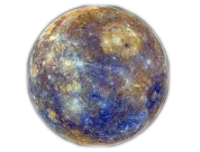
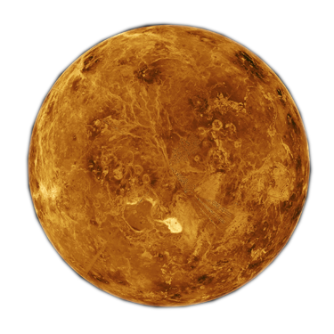
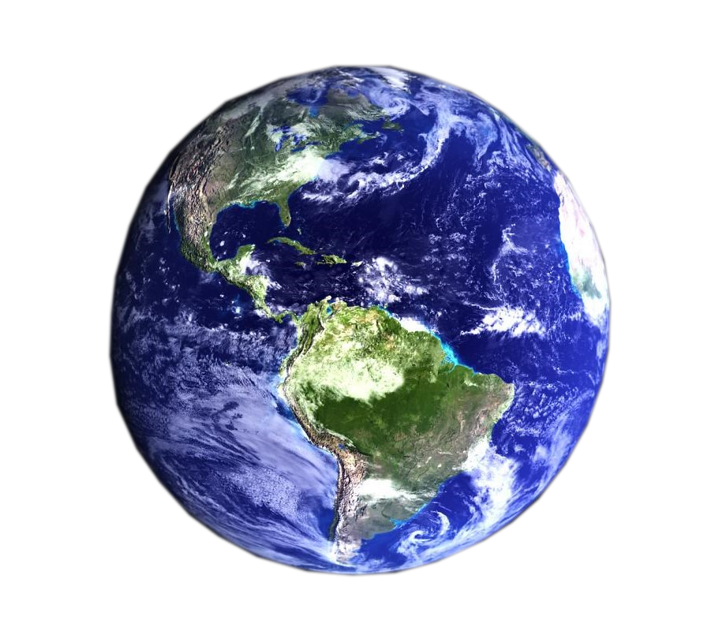
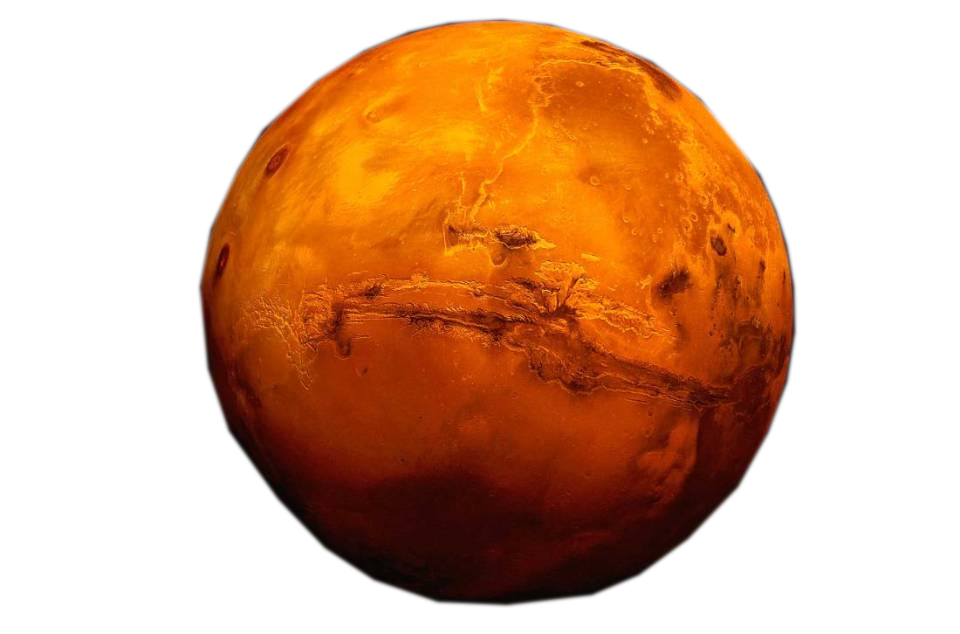
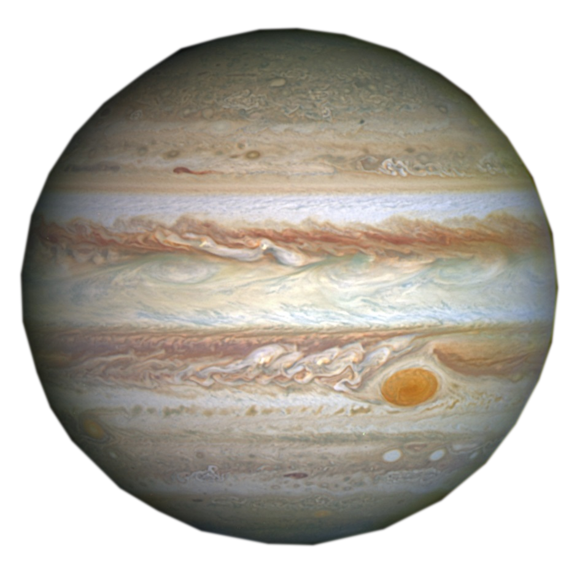
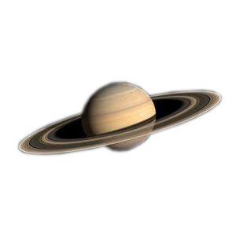
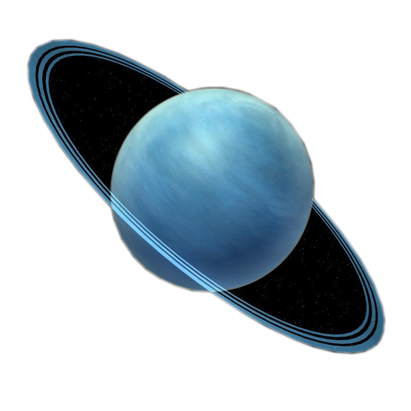
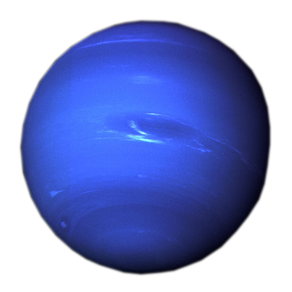

MERKÜR  |
GENEL ve FİZİKSEL ÖZELLİKLERİ Güneş sisteminde bulunan 8 gezegenden en küçüğü olan Merkür, 4879 kilometrelik bir çapa sahiptir. Merkür, Güneş'e en yakın gezegendir. Güneş'e olan uzaklığı yaklaşık 58 milyon kilometredir. Güneş ışınları Merkür'e 3.2 dakikada ulaşır. Düşük yerçekimi nedeniyle atmosferi yoktur. Merkür, yörüngesinde saatte 173.000 kilometre hızla ilerler. Merkürün dış kabuğunun kalınlığı 500-600 km civarındadır. Dünyanın dış kabuğu 3000 km olduğu biliniyor. Merkür, sistemimiz içerisinde en yoğun ikinci gezegendir. Merkür'de 1 yıl 88 gündür. Yerçekimi, Dünya'nın %38'i kadardır. Yani Dünya’da 100 kilogram olan bir cisim, Merkür'de 38 kilogramdır. Yüzey sıcaklığı, -173 ila 427 santigrat derecedir. Yörünge tamamlama süresi, 87,97 Dünya günüdür. Güneş’in etrafındaki yörünge turunu hızlı tamamlamasından dolayı ismini Antik Roma mitolojisinde "Haberci Tanrısı" olarak bilinen Merkür’den almaktadır. Gezegenin yüzeyi irili ufaklı kraterlerle kaplıdır. Bu özelliği ile Ay'a benzemektedir. Yüzeyindeki bilinen en büyük krateri Mariner 10 tarafından 1974 yılında tespit edilen, çapı 1550 km olan, The Caloris Basin(Caloris Havzası) krateridir. |
||
|---|---|---|---|
VENÜS  |
GENEL ve FİZİKSEL ÖZELLİKLERİ İsmini Yunan’lılar tarafından Afrdodit, Roma’lılarca ise Venus denilen aşk ve güzellik tanrıçasından alır. Venüs Gezegeninin takip etmiş olduğu yol, Merkür ve Dünya’nın arasında yer almaktadır. Dünya ikizi olarak da bilinir. Ortalama Dünya ile olan uzaklığı 41 milyon kilometre, Güneş ile ise 108 kilometredir. Diğer gezegenler gibi Venüs de yansıyan Güneş ışıkları ile parlar. Venüs’ün ortalama sıcaklığı 425 santigrat derecedir. Yani kurşunu bile eritebilecek kadar yüksek bir sıcaklığa sahiptir.Güneş sisteminin en sıcak gezegeni Venüstür. Venüs'te 1.600'den fazla büyük volkan veya volkanik özellik bilinmektedir. Venüs, Güneş sistemindeki diğer gezegenlerden daha fazla yanardağa sahiptir. Kalın bir atmosfere sahip olan Venüs, Güneş ışığının %76’sını geri yansıtır. Güneş etrafındaki dönme hızı kendi etrafında dönme hızından daha fazladır (bir yılı, bir gününden daha uzun olması). Güneş etrafında dönme süresi 224 gün, kendi ekseni etrafında dönme süresi 243 gündür. Yere benzeyen gezegenler arasında, atmosfer yoğunluğu en fazla olan gezegendir. Venüs’ün atmosferinin %96,5’i karbondioksitten oluşuyor. |
||
DÜNYA  |
GENEL ve FİZİKSEL ÖZELLİKLERİ Gezegenimiz karasal gezegenlerden en büyüğü olmakla yanısıra kitle ve büyüklük acısından da beşinci gezegendir. Bilim adamlarının yaptığı hesaplamalara göre Dünyanın oluşu 4.54 milyar yıl önceye dayanıyor. Dünya şuana kadar bilinen yaşam destekli tek gezegendir. Dünya'nın dönme ekseni, yörünge düzlemine göre eğik olup bu eğiklik mevsimlerin oluşmasına yol açmaktadır. Dünya ile Ay arasındaki kütleçekimi etkileşimi; Dünya'nın eksenindeki yönelimi sabitler, gelgitlere neden olur ve dönmesini kademeli olarak yavaşlatır. Katı ya da kaya ağırlıklı yapısı nedeniyle üyesi bulunduğu yer benzeri gezegenler grubuna adını veren Dünya, bu gezegen grubunun kütlece ve hacimce en büyük üyesi olmasının yanı sıra Güneş Sistemi'ndeki en yoğun gezegendir. Dünya katı, sıvı ve gazın mevcut olduğu güneş sistemindeki tek gezegendir. Dünya yüzeyinin yaklaşık %29'u, kıtalar ve adaların meydana getirdiği kara iken; suyla kaplı olan kalan %71'lik kısım ise okyanuslar, göller, akarsular ve diğer tatlı suların oluşturduğu hidrosfer olarak adlandırılır. Hepimiz dünya ile birlikte güneşin etrafında saatte 107.182 kilometre ortalama hızda seyahat ediyoruz. |
||
MARS  |
GENEL ve FİZİKSEL ÖZELLİKLERİ Gezegen adını antik Roma savaş tanrısına ithafen almıştır. Bu adın ona verilmesi, gezegenin kırmızı olması ve bunun da savaş – kan rengine benzerliğinden kaynaklandığı düşünülüyor. İnce bir atmosferi olan Mars gerek Ay'daki gibi meteor kraterlerini, gerekse Dünya'daki gibi volkan, vadi, çöl ve kutup bölgelerini içeren çehresiyle bir yerbenzeri gezegendir. Ayrıca dönme periyodu ve mevsim dönemleri Dünya’nınkine çok benzer. 2 adet uydusu bulunmaktadır. Günümüzde, Mars, yörüngelerine oturmuş üç uzay gemisine evsahipliği yapmaktadır: Mars Odyssey, Mars Express ve Mars Reconnaissance Orbiter. Uyduları Phobos ve Deimos.Mars, Dünya hariç tutulursa, Güneş Sistemi’ndeki herhangi bir sıradan gezegenden ibaret değildir. Yüzeyi pek çok uzay aracına evsahipliği yapmıştır. Bu uzay araçlarıyla elde edilen jeolojik veriler şunu ortaya koymuştur ki, Mars önceden su konusunda geniş bir çeşitliliğe sahipti; hatta geçen on yıllık süre sırasında gayzer (kaynaç) türü su fışkırma veya akıntıları meydana gelmişti. Yüzey sıcaklığı: -87 ile 5° C arasındadır. Yörünge tamamlama süresi: 686.971 Dünya günüdür. |
||
JÜPİTER  |
GENEL ve FİZİKSEL ÖZELLİKLERİ Jüpiteri'n kütlesi, Güneş Sistemi'ndeki diğer tüm gezegenlerin kütlesinin toplamından 2 kat büyüktür. Jüpiter'in dışarıdan bakıldığında görülen çizgileri ve kıvrımları; soğuk, rüzgarlı, amonyak ve su buharlarıyla kaplı, hidrojen ve helyumdan oluşan atmosferinde bulunur. Hepimizin fotoğraflarda gördüğü Jüpiter'deki "Büyük Kırmızı Nokta" olarak adlandırılan fırtına, Dünya'dan daha büyüktür. Jüpiter'in etrafı 79 adet kendi uydusuyla çevrilidir. Bilim insanlarının ilgisini en çok Galileo Uyduları ile çekmektedir. Bu uydular ismini 1610 yılında Galileo Galilei tarafından keşfedildiği için almıştır. Galileo uyduları isimleri; IO, Europa, Ganymede ve Callisto'dir. Ayrıca Jüpiterin de halkaları vardır. Ancak Satürn'ün halkaları gibi buzdan değil tozdan oluşmakta ve daha soluktur. Bu yüzden görünmesi de bir o kadar zordur. Jüpiter'in yarı çapı 69.911 km'dir. Dünyadan 11 kat daha geniştir. Jüpiter, Güneş Sistemi içerisinde en kısa gün uzunluğuna sahip gezegendir. Jüpiter için bir gün 10 saat sürer. Bu Jüpiter'in kendi etrafında bir tur atması için gereken süredir. Jüpiter'in Güneş etrafında 1 tam tur atması için gereken süre ise 12 Dünya yılıdır (ya da 4333 Dünya günü). Jüpiterin Güneş'e olan uzaklığı 778 milyon kilometredir. Güneşten çıkan ışınlar Jüpitere 43 dakika ulaşır. Yani o mesafe ışık hızıyla gidilecek olursa, yolculuk 43 dakika sürer. |
||
SATÜRN  |
GENEL ve FİZİKSEL ÖZELLİKLERİ Bu gezegen ekvatordan geniş ve kutuplardan basık bir şekle sahiptir. Yani Dünya ile benzer bir şekilleri vardır. Güneşten almış olduğu enerjinin 3 katı civarını dışarıya yayar. Gezegende büyük orandaki basıklığa sebep olarak bu büyük ve yoğun çekirdek gösterilir. Yapılan hesaplamalara göre bu çekirdek, gezegenin dörtte bir kadarını oluşturmaktadır. Çekirdeği çevreleyen kısımda manto tabakası mevcuttur. Bu katman Satürn’de, Jüpiter’de olduğu kadar büyük değildir. En dış alanda gezegenin hacminin %90 kadar büyük bir kısmını meydana getiren, 30.000 km civarında kalınlığı olan moleküler bir hidrojen tabakası mevcuttur. Yüzeye yaklaşıldıkça basınç, yoğunluk ve ısı düşüşe geçer. Böylelikle hidrojen sıvıdan gaza dönüşerek; atmosfer olarak nitelendirilebilecek bir ortama geçiş başlar. Güneş’e uzaklığı, 1.426.666.422 km’dir. Dünya’dan uzaklığı, 1.277.068.160 km’dir. Gezegenin en büyük uydusu olan Titan, Merkür’den biraz daha büyüktür ve Jüpiter’in ayı olan Ganymede’den sonra Güneş Sistemi’nin en büyük ikinci uydusudur. Ay ise beşinci büyük uydudur. |
||
URANÜS  |
GENEL ve FİZİKSEL ÖZELLİKLERİ Uranüs, Güneş Sistemi’nde en sonda bulunan Neptün’ün hemen önünde yer alan gezegendir. Güneş’e uzaklığı yaklaşık olarak 2.842.400.000 kilometredir. Dünya’dan daha büyük yapısı ile Uranüs’ün çapı, Jüpiter ve Satürn’den sonra üçüncü büyük gezegendir. Kütle açısından ise bu iki gezegen ve Neptün’den sonra dördüncü büyüktür. dını Yunan mitolojisindeki gökyüzü tanrısı Uranus’tan alan Uranüs, buz devleri sınıfına girmektedir. Kütlesi, Dünya’nın 15 katıyken; hacmi, 64 katıdır. En az fotojenik gezegendir. Uranüs, Güneş çevresindeki bir devrini 84 yılda tamamlamaktadır. Uydu anlamında da üçüncü en zengin gezegendir. Şimdiye kadar keşfedilmiş 27 uydusu vardır. Uranüs’ün kütlesi yaklaşık olarak Dünya’nın kütlesinin 15 katıdır. Hacmi ise; yaklaşık olarak 64 katı kadar olup, oldukça büyük bir gezegen olan Uranüs’ün çapı 50000 km civarındadır. Gezegenin atmosferinde de Hidrojen ve Helyum vardır. Gezegenin ve atmosferinin sıcaklığı -200 Santigrat derecedir. |
||
| NEPTÜN  |
GENEL ve FİZİKSEL ÖZELLİKLERİ Neptün Güneş sisteminin Güneş'ten uzaklık sırasına göre 8. gezegenidir. Kütle açısından Jüpiter ve Satürn'den sonra üçüncü, çap açısından bu iki gezegen ve Uranüs'ün ardından dördüncü sırada gelir. Adını Roma deniz tanrısı Neptunus'tan alır. 1846 yılında Urbain Le Verrier ve Johann Gottfried Galle tarafından bulunmuştur. Gaz devleri sınıfına girmektedir. Neptün Dünya’nın 17 katı kütleye (kütle kavramını aynı şey olmasa da, ağırlık olarak düşünebilirsiniz) sahip Neptün’ün Güneş’e uzaklığı ortalama 30 astronomik birimdir. Neptün’ün bilinen 14 uydusu var. Bunların en büyüğü William Lassell tarafından gezegenin keşfinden sadece 17 gün sonra gözlemlenen Triton’dur. Bu gezegende günler çabuk geçiyor, her bir günü 16 Dünya saatiyle eşdeğer. Bir yılı 90.000 gün, yani Güneş yörüngesini 165 Dünya yılında dönüyor. Güneş Sistemi’ndeki diğer uydulara göre ters bir yörüngeye sahip olan Triton, Neptün etrafında dönen uyduların toplam kütlesinin %99.5’ini oluşturuyor. İkinci keşfedilen uydusu, Güneş sistemindeki en eliptik uydu yörüngesine sahip Nereid’dir. Güneşe uzaklığı 4.348.798.179 km. |
||
| +90 (539) 123 45 67
|